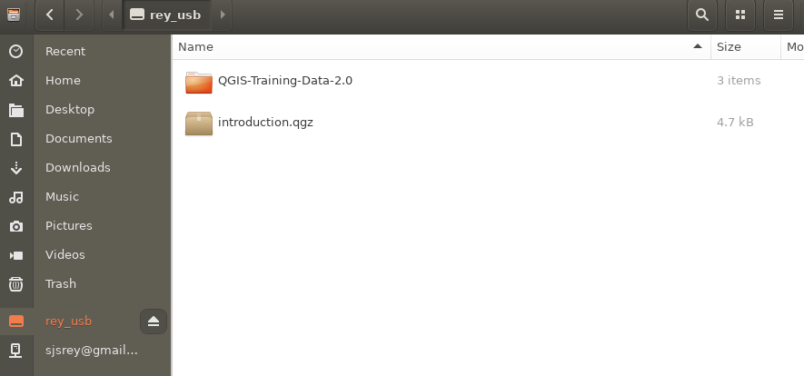
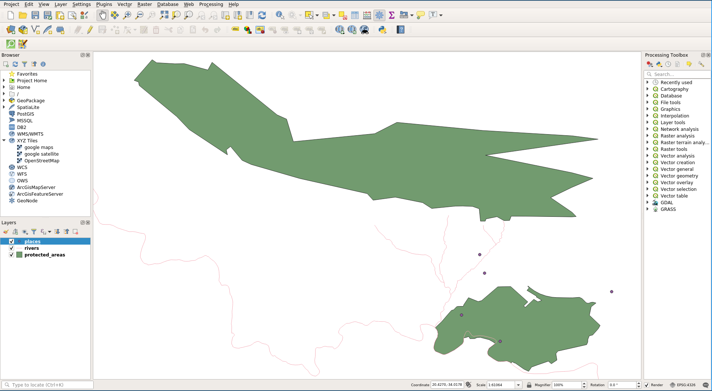

Data Models
Last Time
- Open Source/Science/Education
- Introduction to QGIS
Today
- (Spatial) Data
- GIS Data Models
- Vector Model
(Spatial) Data
What is Data?
!DIKW_Pyramid
[Source]
Spatial Data
- Also known as geospatial data
- Observation that identify the geographic locations of
- features on the Earth
- boundaries on the Earth
- Stored as coordinates and topology
- 80-100% of all data have a geographical component (Cressie 1993)
Types of Spatial Data
- Point Pattern Data
- Geostatistical Data
- Lattice (Polygon) Data
- Network Data
- Spatial Interaction Data
Digital Data
In order to encode spatial data, we need
a conceptual view that can form the basis for a data model.
By encode, we mean turn data as observations into digital data that can be used in a GISystem
Representation
Two key views of geospatial reality are the:
Object View
- the world is viewed as a set of discrete spatial objects (entities)
- can take different forms
- points: location of a traffic accident
- lines: stream segment/river segment
- areas/polygons: Riverside County
Object View
!object_view
Field View
- geography seen as a collection of continuous variables
- phenomena could be measured everywhere (at any point in space)
- ex: air pollution, elevation, precipitation
Field View
!laAir
#
GIS Data Models
GIS Data Models
- Vector Data Model (Today)
- Raster Data Model (Future)
Vector Data Model
- Each discrete object is considered to be a feature
- Vector features have attributes, which consist of text or numerical information that describe the features
- A vector feature has its shape represented using geometry
- The geometry is made up of one or more interconnected vertices
Vector Geometry
- The geometry is made up of one or more interconnected vertices
- A vertex describes a position in space using an X, Y and optionally Z axis.
- Geometries which have vertices with a Z axis are often referred to as 2.5D since they describe height or depth at each vertex, but not both.
#
!point_feature
#
!polyline_feature
!polygon_feature
Scale and Representation
!riverside_point
Scale and Representation
!riverside_network
Vector Attributes
!attribute_table
Attribute Properties
!attribute_properties
Issues with Vector Data
- slivers
- under and overshoots
- topological errors
Slivers
!vector_slivers
Under and overshoots
!vector_overshoots
Next Up
Open Source GIS
GIS Software
Open Source, Open Science Open Education
Origins
- Free Software
- Open Source Software
They are not the same
Freedom
- Free as in Beer
- Free as in Speech
Why Open Source GIS?
A word from the editor
Open Science (Why?)

Open Science (What?)
 (FOSTER)
(FOSTER)
Open Education
- access to quality education is everyone's birthright
- human knowledge is a public good) that should be available to all
- human knowledge is a public good that we all can contribute to
QGIS

QGIS Community

Data
For this lecture, download our example data
Open QGIS

Load a Vector Layer

Vector Layer Loaded

Interface Components
Menu Bar

Tool Bar

Canvas

Browser Panel

Layer Panel

Locator Bar
Status Bar

Working with Projects, Files, and Directories
Load two new layers


Projects
What is a QGIS Project?
- A
meta-file that defines the files associated with an analysis
- A
project file records locations of files related to a project
- Extension:
gqz
Saving a project

Project Save Dialog

Project Saved

Project File

Quit QGIS

Opening Project on a different computer (and operating system)
Linux File Browser

QGIS on Linux

Open Project on Linux

Our Project on Linux

{kind=link}
{kind=link}
{kind=link}
{kind=link}
{kind=link}
{kind=link}
{kind=link}
{kind=link}
{kind=link}
{kind=link}
{kind=link}
{kind=link}